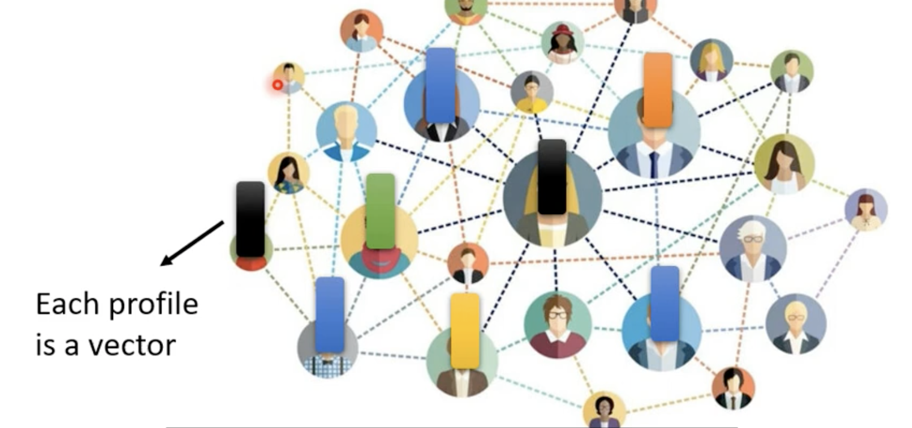

机器学习 by 李宏毅(4)
Self-Attention
常见的Network 架构 - Self-attention
Sophisticated Input
输入是多个向量，向量的数目会发生改变
Vector Set as Input
- 若Network输入是一个句子，每一个句子的长度都不一样,每个句子裡面词汇的数目都不一样。如果把一个句子裡面的每一个词汇, 都描述成一个向量, 那Model的输入是一个Vector Set, 而且每次句子的长度不一样, Vector Set的大小就不一样
- One-Hot Encoding 把词汇表示为向量，但这种表示方法有一个非常严重的问题,它假设所有的**词汇彼此之间都是没有关系的,从这个向量裡面你看不到：Cat跟Dog都是动物所以他们比较接近。这个向量中,没有任何语义的信息
- Word Embedding：给每一个词汇一个向量,而这个向量具有语义信息，相似的类别聚集在一起
- 声音信号，一段声音信号其实是一排向量, 把一段声音信号取一个范围, 这个范围叫做一个Window
Window 里的信号描述为一个向量，称为 Frame，通常Window 的长度是25ms，一整段的信号需要 Window 向右滑动一般10ms，一秒的声音信号有100个 Frame，一分钟则有6000个Frame
- Graph，is a set of vectors。在Social Network上每一个节点就是一个人,然后节点跟节点之间的edge就是他们两个的关系连接，每个节点可以看做一个向量（性别，年龄，工作等等）

- 分子信息，可以看做一个Graph。一个分子可以看作是一个Graph,分子上面的每一个原子，可以表述成一个向量，一个原子可以用One-Hot Vector
output
- Each vector has a label，输入多少向量，输出多少对应label
Application：POS tagging（词性标注）、Phonetic tagging（拼音标注）、商品推荐
- The whole sequence has a label
Application：Sentiment analysis（情绪分析），语者辨认、分子性质分析
- Model decides the number of labels itself（又sequence to sequence）
Application：机器翻译、语音识别
Sequence Labeling
输入跟输出数目一样多的情况又叫做 Sequence Labeling，模型如何设计？
- Fully-Connected Network
问题：如词性标注，单词和单词之间存在关系，同一个单词不同位置具有不同的词性，需要考虑上下文，把前后几个向量都作为一个neuron的输入
- Self-attention
Self-Attention会考虑整个Sequence的信息，Input几个Vector 就输出几个Vector，输出的 Vector 都是考虑一整个Sequence以后才得到的
Self-Attention不是只能用一次, 可以叠加很多次
可以把Fully-Connected的Network,跟Self-Attention交替使用
- Self-Attention处理整个Sequence的信息
- Fully-Connected的Network, 专注于处理某一个位置的信息
- 再用Self-Attention,再把整个 Sequence 信息再处理一次
- 然后交替使用Self-Attention跟Fully-Connected
实现
Self-Attention的Input, 是一串的Vector, Vector可能是整个Network的 Input, 也可能是某个Hidden Layer的 Output，所以用a来表示它，每一个b都是考虑了所有的a以后才生成出来的
\(b_1\)产生步骤：
- 根据\(a_1\)找到与之想关联的向量，每一个向量跟\(a_1\)的关联的程度,用一个数值α来表示
计算attention的模组可以自动计算两个向量之间的关联性\(\alpha\): Dot-product or Addictive
Dot-product: 输入的这两个向量分别乘上两个不同的矩阵，再把 q 跟 k 做dot product, 做 element-wise 的相乘, 再全部加起来以后就得到一个 scalar, 这个scalar就是α，最常用的方法,也是用在Transformer里面的方法
q有一个名字叫Query，k叫做 Key，Query q1,跟Key k2, 计算 Inner-Product 就得到\(\alpha_{1,2}\)，表示Query是\(a_1\)提供，key是\(a_2\)提供，一般实际中也会计算\(a_1\)和自己的关联度
- 计算出\(a_1\)跟每一个向量的关联性以后, 接入一个Soft-Max(用别的 Activation Function 替代也没问题)
- 得到这个 \(\alpha^{'}\) 以后,我们就要根据 \(\alpha^{'}\) 抽取出 Sequence 里重要的信息
- 首先把\(a_1\)到\(a_4\)这边每一个向量,乘上\(W^v\)得到新的向量\(v_1\)到\(v_4\)
- 接下来把这边的\(v_1\)到\(v_4\), 每一个向量都乘上attention的分数\(\alpha^{'}\)
- 把4个结果相加得到\(b^1\)
如果某一个向量它得到的分数越高, 比如如果\(a^1\)跟\(a^2\)的关联性很强, 得到的\(\alpha^{'}_{1,2}\)值很大,那我们今天在做 Weighted Sum 以后,得到的值,就可能会比较接近\(v^2\)
矩阵角度
- 每个a向量都要计算 q k v，因此可以把a向量拼接为矩阵I，q向量拼接为矩阵Q，同理得到矩阵K，V，其中\(W^q,W^k,W^v\)是Network的参数，需要learn
- 计算 \(attention\ score = inner\ product（k^T, q）\)
拼接成矩阵后
$$ A^{'}=softmax(A)=softmax \[\begin{pmatrix} \alpha_{1,1} &\alpha_{2,1} &\alpha_{3,1} &\alpha_{4,1} \\ \alpha_{1,2} & \alpha_{2,2} &\alpha_{3,2} &\alpha_{4,2}\\ \alpha_{1,3} &\alpha_{2,3} &\alpha_{3,3} &\alpha_{4,3}\\ \alpha_{1,4} &\alpha_{2,4} &\alpha_{3,4} &\alpha_{4,4}\\ \end{pmatrix}\] = softmax \[\begin{pmatrix} {k^1}^T\\ {k^2}^T\\ {k^3}^T\\ {k^4}^T\\ \end{pmatrix} \begin{pmatrix} q^1 q^2 q^3 q^4\\ \end{pmatrix}\]= softmax(K^T Q) $$
\[ attention\ score = softmax(K^TQ) \]
- 计算\(b^1,b^2,b^3,b^4\)
\
O = (b1b2b3b4)=(v1v2v3v4) softmax \[\begin{pmatrix} \alpha_{1,1} &\alpha_{2,1} &\alpha_{3,1} &\alpha_{4,1} \\ \alpha_{1,2} & \alpha_{2,2} &\alpha_{3,2} &\alpha_{4,2}\\ \alpha_{1,3} &\alpha_{2,3} &\alpha_{3,3} &\alpha_{4,3}\\ \alpha_{1,4} &\alpha_{2,4} &\alpha_{3,4} &\alpha_{4,4}\\ \end{pmatrix}\]= V A{'}=Vsoftmax(KTQ) $$
- 需要learn的参数\((W^K,W^q,W^v)\)
Multi-head Self-attention
Self-attention 有一个进阶的版本,叫做 Multi-head Self-attention
Self-attention 的时候, 用 q 去找相关的 k, 但是相关这件事情有很多种不同的形式, 有很多种不同的定义, 所以应该要有多个 q, 不同的 q 负责不同种类的相关性
在Self-attention 的基础上得到的q，再乘另外两个不同的矩阵，得到\(q^1 \ q^2\)，同理得到 \(k^1,k^2,v^1,v^2\)
然后把\(b^{i,1}\)跟\(b^{i,2}\)接起来,然后再通过一个 transform 得到\(b^i\)
Positional Encoding
Self-attention 机制产生的\(b^1到b^4\)操作完全一样，向量\(a^1到a^4\)对于self-attention 而言次序的信息被忽略，而次序信息在特定的情况下十分重要，比如 POS tagging, 语音识别等。
所以在self-attention 中加入位置信息，就是通过 position encoding 技术
Each positon has a unique positional vector
为每个位置设置 positional vector \(e^i\)，i 代表不同的位置，然后加到\(a^i\)上，每个位置的e是唯一的
Self-attention for Speech
把一段声音讯号,表示成一组向量的话可能会非常地长，vector 的 sequence 它的长度是非常可观会造成 attention score 的计算量十分大，所以需要 Truncated Self-attention
Truncated Self-attention 做的事情就是, 在 Self-attention 的时候,不看一整句话, 只看一个小的范围就好，这个范围是一个超参数
Self-attention for Image
一张图片,可以换一个观点, 把它看作是一个 vector 的 set，如图所示的图像
把每一个位置的 pixel,看作是一个三维的向量, 那整张图片,其实就是 5 乘以 10 个向量的set
Self-attention v.s. CNN
用 Self-attention 来处理一张图片, 假设一个 pixel 产生 query, 其他 pixel 產生 key，做 inner product 的时候, 考虑的不是一个小的receptive field的信息, 而是整张图像的信息，而CNN的 filter 只考虑Receptive field 内的信息
- CNN 相当于简化的 Self-attention
- CNN中的 Receptive Field 是一个超参数，self-attention 则是自动学习出来的
- CNN是self-attention的特例
这个实验结果,来自 An image is worth 16 X16 words, 把图像拆成 16 乘以 16 个 patch, 把每一个 patch想像成是一个 word,
随著数据量越来越多, Self-attention 的结果越来越好, 最终在数据量最多的时候, Self-attention 超过 CNN, 但在数据量少的时候, CNN 它是可以比 Self-attention,得到更好的结果
Self-attention v.s. RNN
RNN（recurrent neural network）
第二个 vector 作为 input 的时候, 也会把前一个时间点的output, 当做下一个时间点的输入,再输入 RNN 裡面,然后再产生新的 vector, 再输入 fully connected network
区别：
- 对 RNN 来说,假设最右边这个黄色的 vector, 要考虑最左边的这个输入, 那它必须要把最左边的输入存在 memory 里面, 一直保存到最右边, 才能够在最后一个时间点被考虑。但对 Self-attention 来说没有这个问题, 它只要输出一个 query, 输出一个 key, 可以从整个 sequence 上非常远的 vector, 轻易地抽取信息
- RNN 在处理的时候, input 一组 sequence, output 一组 sequence 的时候, RNN 没有办法平行化处理，self-attention 可以并行化处理
- 在运算速度上,Self-attention 会比 RNN 更有效率。目前很多的应用都往往把 RNN 的架构,逐渐改成 Self-attention 的架构
Self-attention for Graph
之前做 Self-attention 的时候, 所谓的关联性是 network 自己找出来, 但是现在既然有了 Graph 的 edge 的信息, edge 已经暗示node 跟 node 之间的关联性
所以 Self-attention 用在 Graph 上面的时候, 在做这个 Attention Matrix 计算的时候,你可以只计算有 edge 相连的 node ，也就是有关系的向量\(a\)，无关的node之间的attention score 设为0
Self-attention 最早用在 Transformer 上面, 所以很多人讲 Transformer 的时候, 指的就是 Self-attention, 所以后来各式各样的 Self-attention 的变形都叫xxformer, 比如 Linformer Performer Reformer 等等。